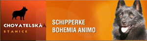
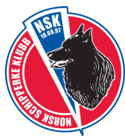
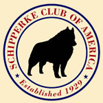
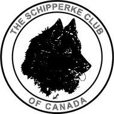

Onze Internationale Partners
We werken samen met Schipperke verenigingen wereldwijd om kennis te delen, ervaringen uit te wisselen en het ras te behouden voor toekomstige generaties.

Koninklijke Schipperkes Club van België
België

Svenska Schipperke Ringen
Zweden
Cercle European des Amateurs
Frankrijk
Schipperkes Club de France
Frankrijk

UK Schipperke Club
Engeland
Schipperkes UK
Engeland

Schipperke Bohemia Anima
Tsjechië

Norsk Schipperke Klubb
Noorwegen

Schipperke Club of America
Verenigde Staten

Schipperke Club of Canada
Canada